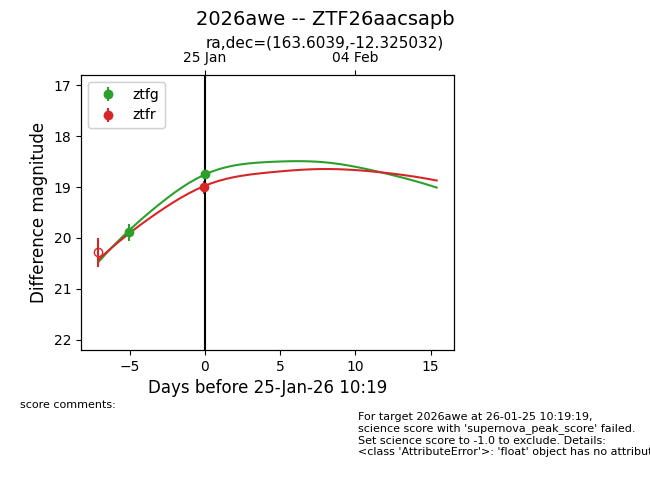
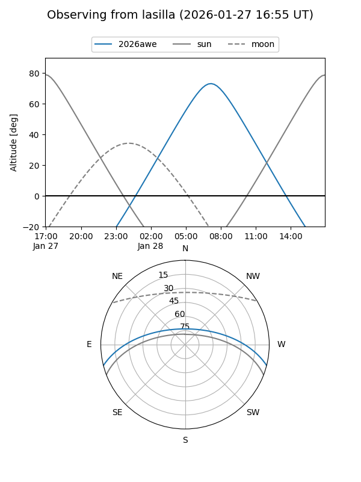
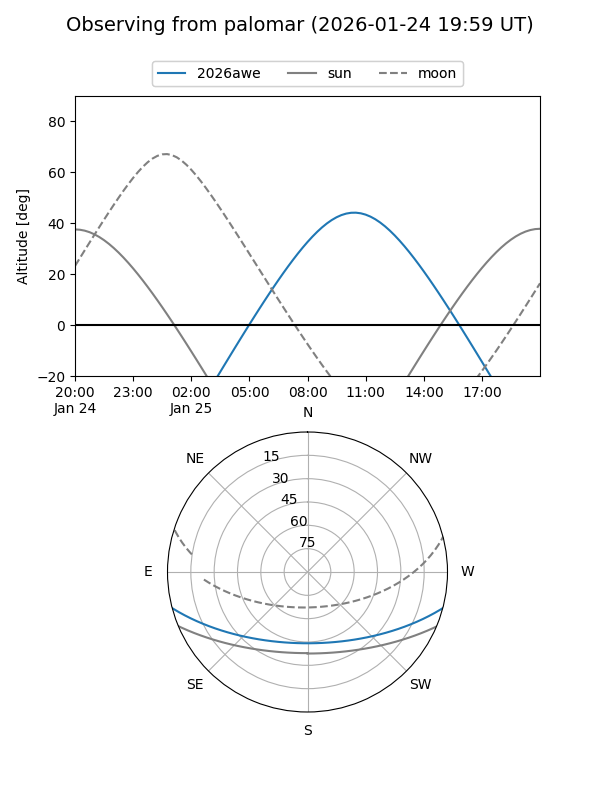
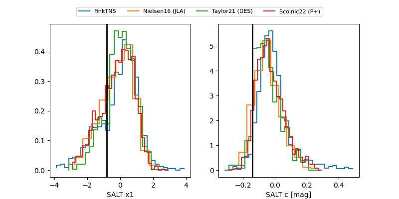

2026awe
Target 2026awe at 2026-01-27 09:31
Aliases and brokers:
FINK: link
Lasair: link
ALeRCE: link
TNS: link
YSE: link
alt names
ZTF26aacsapb (ztf,fink_ztf)
2026awe (tns,yse)
Coordinates:
equatorial (ra, dec) = 163.6039,-12.32503
equatorial (HMS+DMS) = 10:54:24.94,-12:19:30.11
galactic (l, b) = (263.4049,+41.39452)
Flags:
Photometry:
last ztfg=18.74, ztfr=19.00
2 ztfg, 1 ztfr detections
Lightcurve

Visibility


Additional plots
